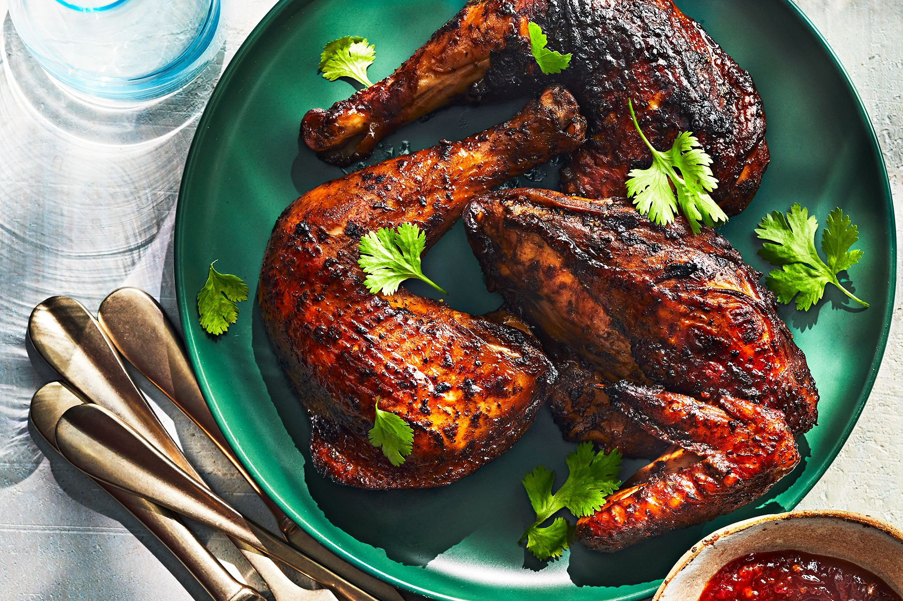

Tamarind Chicken

Ingredients
- 1 (3- to 3 1/2-pound) whole chicken
- ½ cup packed fresh cilantro leaves, finely chopped, plus more for garnish
- ¼ cup olive oil
- ¼ cup tamarind concentrate (such as Tamicon)
- 2 tablespoons jarred chipotle chile paste (such as Gran Luchito)
- 1 tablespoon plus 2 teaspoons paprika
- 2 ½ teaspoons fine sea salt
- 2 medium garlic cloves, grated (about 1 teaspoon)
- ½ teaspoon black pepper
Directions
- Place chicken on a cutting board, and pat dry. Using kitchen shears, cut on either side of backbone to remove; reserve backbone for another use, if desired. Using a sharp chef's knife, cut through breastbone to separate chicken into halves. Cut each half to separate into 2 pieces, leaving thigh and drumstick attached and breast and wing attached. Set chicken pieces aside.
- Stir together cilantro, oil, tamarind, chipotle paste, paprika, salt, garlic, and black pepper in a large bowl. Add chicken pieces, and toss to coat, massaging tamarind mixture into skin. Let marinate 5 minutes, or cover and refrigerate up to overnight (about 12 hours).
- Open bottom vent of a charcoal grill completely. Light charcoal chimney starter filled with briquettes. When briquettes are covered with gray ash, pour them onto bottom grate of grill. Adjust vents as needed to maintain an internal temperature of 350°F to 400°F. (If using a gas grill, preheat to medium [350°F to 400°F].) Coat top grate with oil; place on grill. Transfer chicken pieces to a baking sheet lined with aluminum foil. Brush remaining tamarind mixture in bowl onto chicken skin. Using tongs, place chicken pieces, skin side down, on oiled grates. Cover and grill, flipping chicken every 5 minutes, until a thermometer inserted in thickest portion of meat registers 155°F, 35 to 45 minutes. Transfer chicken to a large plate or clean baking sheet. Let rest 10 minutes. (Internal temperature will continue to rise to 165°F as chicken rests.) Transfer to a platter. Garnish with additional cilantro.